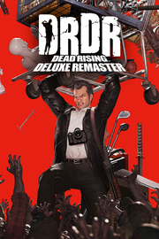

Dead Rising Deluxe Remaster
Detalles
 |
|
| Tiempo de juego | No Jugado |
| Última actividad | Nunca |
| Añadido | 08/09/2025 6:29:30 |
| Modificado | 08/09/2025 6:30:05 |
| Estado de finalización | Not Played |
| Librería | Playnite |
| Fuente | 6TB STORE |
| Plataforma | PC (Windows) |
| Fecha de lanzamiento | 18/09/2024 |
| Puntuación de la Comunidad | 78 |
| Puntuación de la Crítica | 79 |
| Puntuación de usuario | |
| Género | Acción Aventura |
| Desarrollador | CAPCOM Co., Ltd. |
| Editor | CAPCOM Co., Ltd. |
| Característica | Cloud Saves Compat. Total Con Mando Cromos De HDR Disponible Logros De Préstamo Familiar Un Jugador |
| Enlaces | Punto de encuentro Discusiones Guías Noticias Página de la tienda PCGamingWiki Logros |
| Tag | Acción Acción y aventura Adorables Aventura Ciencia ficción Cinematográficos Divertidos Finales múltiples Gestión del tiempo Humor negro LGBTQ+ Luchador espectacular Oscuros Sandbox Sangriento Supervivencia Tercera persona Terror Un jugador Zombis |
Descripción
¡Vuelve Dead Rising con gráficos modernizados!
Más que un simple remaster, este "Deluxe Remaster" supone una completa renovación gráfica del primer juego de "Dead Rising", la serie de juegos de acción líder en matanza de zombis!
Este remaster contiene doblaje en varios idiomas, una función de autoguardado, y además incluye muchas otras características que mejorarán sin duda tu experiencia.
¡Participa en un caos sin precedentes y vive para contarlo!

- Historia:
Un buen día, la pacífica ciudad de Willamette, Colorado, se despierta en cuarentena sitiada por el ejército estadounidense.
Frank West, un periodista independiente, huele la primicia y se abre camino hasta el único centro comercial de la ciudad.
Por desgracia, el centro comercial se ha convertido en un infierno sobre la tierra, infestado por incontables zombis.
¡La ayuda llegará en 72 horas, así que sólo él podrá desvelar la verdad oculta tras este incidente antes de que sea demasiado tarde!
- ¡Gráficos realistas completamente renovados con RE ENGINE!
Todos los gráficos, incluyendo personajes y entornos, han sido renovados y mejorados considerablemente con respecto al juego original.
Las expresiones faciales de los personajes, la textura de los materiales, e incluso la sangre parecen más reales que nunca.
¡La inmensa horda de zombies ocupará la pantalla por completo con gráficos completamente actualizados!
- ¡Una experiencia de juego mucho más fluida!
La jugabilidad del original está intacta, pero hemos realizado varios ajustes que mejorarán la experiencia, como por ejemplo el autoguardado, controles actualizados, interfaz mejorada y muchos otros detalles.
Además, el juego llega completamente doblado, lo que mejorará la sensación de inmersión.
- ¡Tienes 72 horas para hacer lo que te plazca!
El juego tiene lugar en un centro comercial gigantesco.
Usa armas comunes como armas de fuego o bates de béisbol, o cualquier artículo del hogar que encuentres en tu camino. ¡Cuando se trata de sobrevivir, todo vale!
Rescata a otros supervivientes, y ya que estás, ¡pruébate ropa nueva!
Eso sí, recuerda de que bajo estas circunstancias extremas, no solo habrá zombis sino que además tendrás que enfrentarte a algún que otro psicópata. ¿Quiénes serán la amenaza más inminente: los zombis o los humanos?
Más que un simple remaster, este "Deluxe Remaster" supone una completa renovación gráfica del primer juego de "Dead Rising", la serie de juegos de acción líder en matanza de zombis!
Este remaster contiene doblaje en varios idiomas, una función de autoguardado, y además incluye muchas otras características que mejorarán sin duda tu experiencia.
¡Participa en un caos sin precedentes y vive para contarlo!
- Historia:
Un buen día, la pacífica ciudad de Willamette, Colorado, se despierta en cuarentena sitiada por el ejército estadounidense.
Frank West, un periodista independiente, huele la primicia y se abre camino hasta el único centro comercial de la ciudad.
Por desgracia, el centro comercial se ha convertido en un infierno sobre la tierra, infestado por incontables zombis.
¡La ayuda llegará en 72 horas, así que sólo él podrá desvelar la verdad oculta tras este incidente antes de que sea demasiado tarde!
- ¡Gráficos realistas completamente renovados con RE ENGINE!
Todos los gráficos, incluyendo personajes y entornos, han sido renovados y mejorados considerablemente con respecto al juego original.
Las expresiones faciales de los personajes, la textura de los materiales, e incluso la sangre parecen más reales que nunca.
¡La inmensa horda de zombies ocupará la pantalla por completo con gráficos completamente actualizados!
- ¡Una experiencia de juego mucho más fluida!
La jugabilidad del original está intacta, pero hemos realizado varios ajustes que mejorarán la experiencia, como por ejemplo el autoguardado, controles actualizados, interfaz mejorada y muchos otros detalles.
Además, el juego llega completamente doblado, lo que mejorará la sensación de inmersión.
- ¡Tienes 72 horas para hacer lo que te plazca!
El juego tiene lugar en un centro comercial gigantesco.
Usa armas comunes como armas de fuego o bates de béisbol, o cualquier artículo del hogar que encuentres en tu camino. ¡Cuando se trata de sobrevivir, todo vale!
Rescata a otros supervivientes, y ya que estás, ¡pruébate ropa nueva!
Eso sí, recuerda de que bajo estas circunstancias extremas, no solo habrá zombis sino que además tendrás que enfrentarte a algún que otro psicópata. ¿Quiénes serán la amenaza más inminente: los zombis o los humanos?